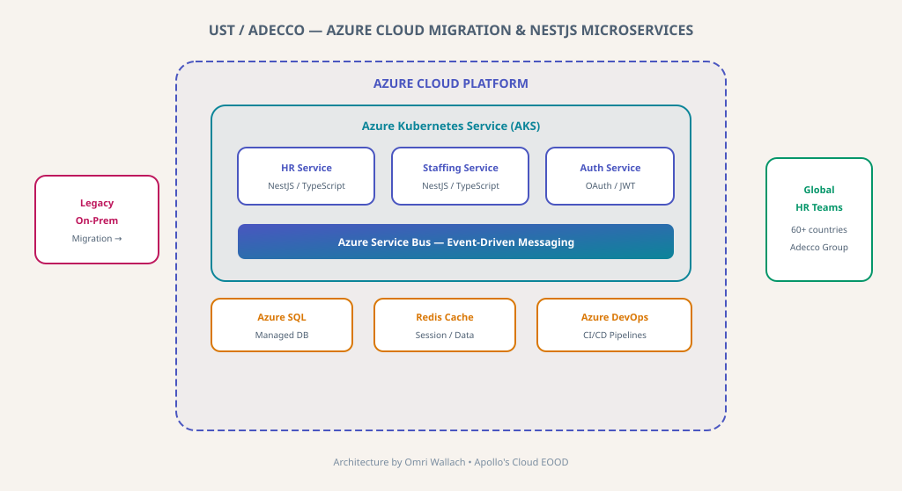

Azure Cloud Migration & NestJS Microservices for UST / Adecco
Enterprise Azure cloud migration with fault-tolerant NestJS microservices on AKS for UST and Adecco's global HR operations spanning 60+ countries.

UST / Adecco — Azure Cloud Migration & NestJS Microservices Architecture
Context
UST (consulting for Adecco Group) needed to migrate legacy on-premises HR systems to a cloud-native Azure environment. The Adecco Group operates in 60+ countries with complex staffing and HR workflows requiring high availability and fault tolerance.
Engineering Challenges
Legacy Migration
Migrating from on-premises infrastructure to Azure Kubernetes Service (AKS) while maintaining business continuity.
Global Scale
Supporting 60+ country operations with varying regulatory requirements and data residency needs.
Fault Tolerance
Building fault-tolerant microservices for mission-critical HR operations that cannot afford downtime.
Architectural Solutions
Azure AKS
Kubernetes orchestration for containerized NestJS microservices with auto-scaling.
NestJS Backend
TypeScript-based microservices for HR, staffing, and authentication domains.
Azure Service Bus
Event-driven messaging for reliable inter-service communication.
Azure DevOps
CI/CD pipelines with automated testing and progressive deployment.
Measurable Impact
Cloud Migration
Successful migration from on-premises to Azure with zero data loss.
Fault Tolerance
NestJS microservices with circuit breakers and graceful degradation.
Global Reach
Multi-region Azure deployment serving 60+ countries.